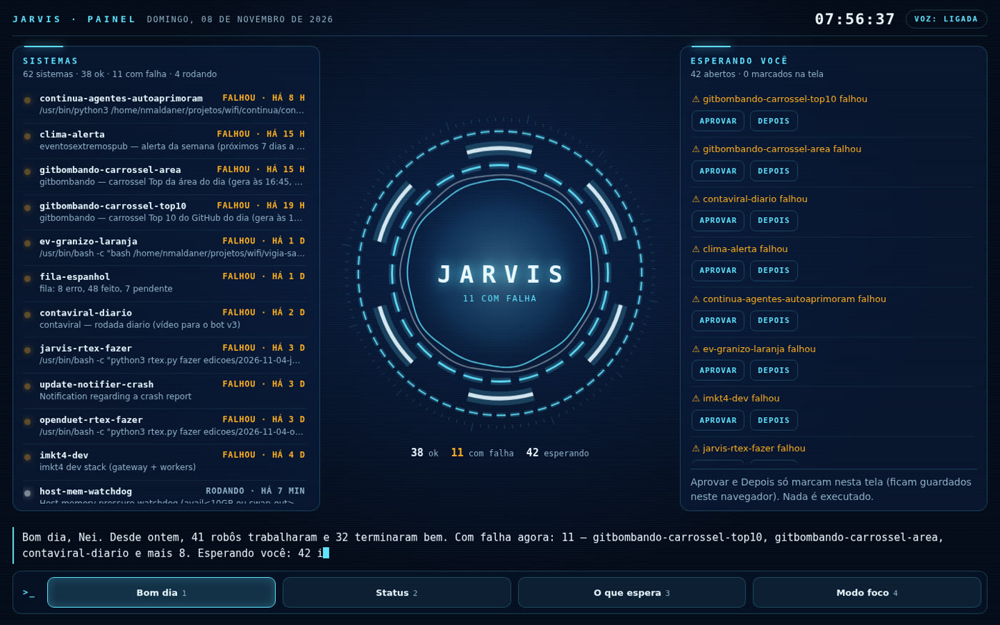
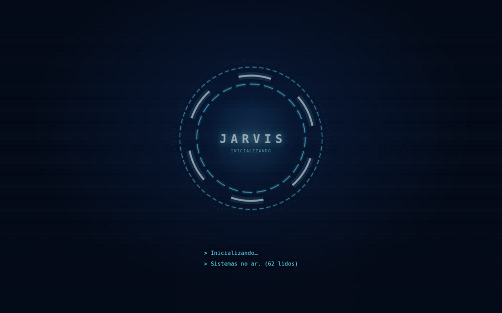
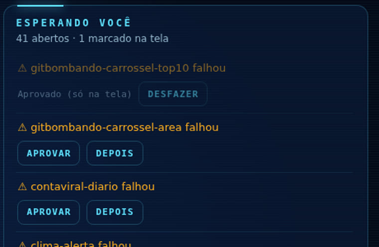
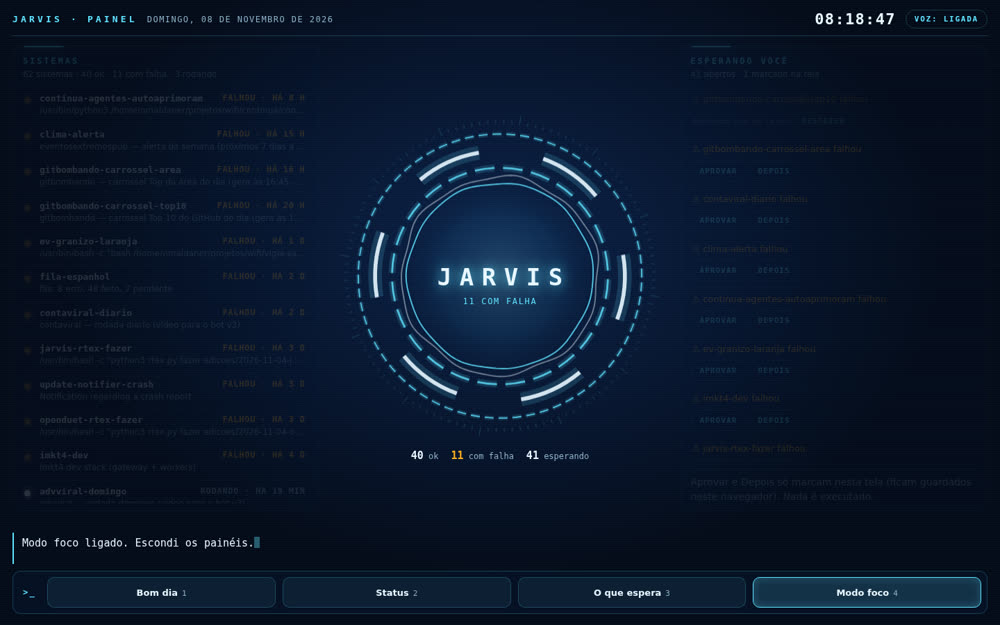
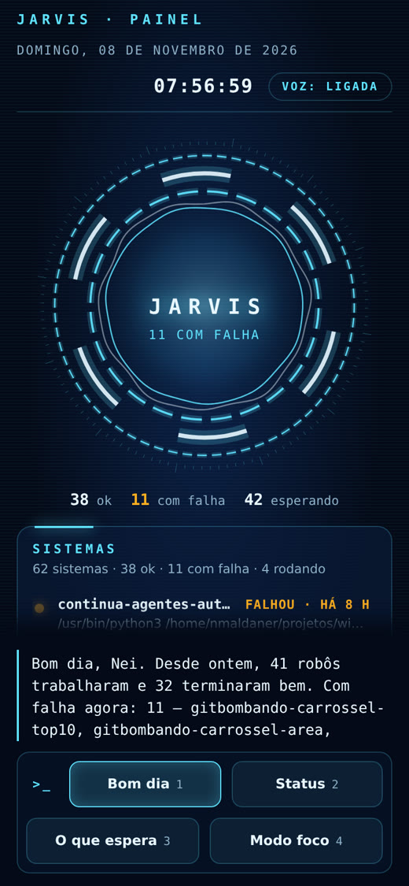

And says good morning: what ran since yesterday, what failed, what’s waiting for you, and the first thing to do.
jarvis-painel is a sci-fi-style screen (a “HUD,” the information panel you see in movies) that brings together, in one place, everything running automatically on your computer: Linux timers, queues, and log files. It’s for people who have bots, routines, and queues running but don’t know what each one has done or what’s waiting for them. It shows what finished successfully, what failed, and your to-do list, and reads a summary aloud in Portuguese. You only need Python 3 and a browser; everything runs on your machine, with no key or paid service, and it only reads data: the buttons don’t run anything.
People who automate things end up with dozens of routines running in the background. The dashboard reads them all and shows them in three sections: Systems, the core that speaks, and "Esperando você" (Waiting for you).
Actually read on an INEMA machine on Nov 8, 2026, at 08:18 (the numbers will be different on your machine and change every hour):

--anonimo mode for this screenshot.Linux timers with the latest result from each one, failed services, JSON queues, logs, and your markdown file of pending items.
"Bom dia" (Good morning), "Status" (Status), "O que espera" (What’s waiting), and "Modo foco" (Focus mode). Voice in Portuguese from the browser itself, with no paid service.
"Aprovar" (Approve) and "Depois" (Later) only mark items on the screen. Nothing is started, stopped, deleted, or sent. Anything it couldn’t read appears as "exemplo" (example).
coletar.py reads the machine and writes to estado.json. bom_dia.py writes the summary. The page reads both and draws the screen.
Three rings spinning at different speeds, pulsing light, the name JARVIS, and a status line. Startup takes about 3 seconds: "Inicializando… Sistemas no ar." (Initializing… Systems online.) "Bom dia" (Good morning), Nei.
Each timer, service, and queue has a dot and a status word: ok, failed, running, or waiting. Below, see how long ago it ran and what it does.
First, anything that failed, then the pending items in your file and items waiting in queues. "Aprovar" (Approve) and "Depois" (Later) buttons, which only mark items on the screen.
Clock, date, and the "Voz: ligada" (Voice: on) badge. Click the badge to turn off the voice.
"Bom dia" (Good morning) · "Status" (Status) · "O que espera" (What’s waiting) · "Modo foco" (Focus mode), also on keys 1, 2, 3, and 4. Focus dims the panels and leaves only the core.
Ice cyan and white on navy; amber only for alerts. Rings at 60 frames per second and no horizontal scrolling on mobile.
Nothing to install besides Python. Ollama is optional.
Python comes with Ubuntu and Mac. Git (which downloads the toolkit) doesn’t always: on Ubuntu, install it with sudo apt install git. Check both:
python3 --version git --version
A timer is a task that runs on its own at a set time (Linux’s “scheduler,” called systemd). Timers come from systemctl --user. Without it (on Mac, for example), systems appear as “example”; pending items and queues remain real.
systemctl --user list-timers
Chrome, Edge, or Firefox. The pt-BR voice depends on your system’s voices. Ollama is a free program that runs an AI model on your own computer (installation at ollama.com); here, it just makes the summary more natural. If you have it, this command lists the models:
ollama list
Every command below was run on a real machine. Paste it into the terminal, one block at a time.
Creates the jarvis-painel folder with the scripts, page, prompts, and tests.
git clone https://github.com/inematds/jarvis-painel.git cd jarvis-painel
The config.json is set up for INEMA. Open it in the terminal editor (save with Ctrl+O, Enter, then exit with Ctrl+X):
nano config.json
The simplest option is to delete everything and paste this, changing the name and path to your pending tasks file (if you don’t have one, leave it as is: the panel shows an "exemplo" (example) in its place):
{
"nome": "Marta",
"pendencias": { "arquivo": "~/pendencias.md", "parar_em": "Resolvidas" },
"fontes_extras": [],
"ignorar": ["snap.*", "run-u*", "*.scope"]
}
The INEMA version included in the kit also reads two task queues and a log:
{
"nome": "Nei",
"pendencias": { "arquivo": "~/projetos/wifi/pendencias.md", "parar_em": "Resolvidas" },
"fontes_extras": [
{ "nome": "fila-espanhol", "tipo": "fila_json", "caminho": "~/projetos/wifi/fila-espanhol/fila.json" },
{ "nome": "log-fila-espanhol", "tipo": "log", "caminho": "~/projetos/wifi/fila-espanhol/fila.log" }
],
"ignorar": ["snap.*", "run-u*", "*.scope"]
}
In the pending tasks file, each line that starts with - **title** or ### title becomes an item, up to the ## Resolvidas section.
Markdown is a plain text file (.md) where **word** marks bold text; create yours with nano ~/pendencias.md and write one pending task per line, like this: - **Pay the bill**. A JSON queue is a list of tasks that a robot writes to a file; a log is the file where it records what it did.
Read-only: timers, the latest result from each service, failures, pending tasks, and queues. The final line summarizes what it found.
python3 coletar.py
On the INEMA machine, the terminal showed (the script writes in Portuguese):
estado.json: 62 sistemas (53 timers) · 40 ok · 11 falharam · 42 esperando você · 0 exemplos
If there’s a typo in config.json, the script gives the line and column where the error occurred.
Based on fixed rules, with no AI: what the robots did since yesterday, what you’re waiting on, and the first thing to do. Saves to bom_dia.txt.
python3 bom_dia.py
With Ollama running, the local model makes the text sound more natural without changing the numbers (the model is set in config.json; if Ollama doesn’t respond, the rule-based text remains). On the INEMA machine, it took 17,5 seconds with qwen3.8:27b.
python3 bom_dia.py --ollama
The page needs a local server to read estado.json. Then open http://localhost:8000 in your browser. It rereads the state every 60 seconds. Leave this terminal open: if you close it, the page stops updating (to shut it down, press Ctrl+C).
python3 -m http.server 8000
For the next steps, open another terminal and go to the folder with cd ~/jarvis-painel.
Click or press keys 1 to 4: "Bom dia" (Good morning), "Status", "O que espera" (What you’re waiting on), and "Modo foco" (Focus mode). Under "Esperando você" (Waiting for you), "Aprovar" (Approve) and "Depois" (Later) only mark items on the screen and are saved in this browser; "Desfazer" (Undo) removes the mark. Nothing is run.
Open the scheduler with crontab -e and paste the line below at the end of the file. It works if you downloaded the kit to your home folder (change the path if you downloaded it somewhere else). Every 5 minutes it rereads the system and rewrites the summary; coletar.py finds your timers even when run by cron.
*/5 * * * * cd $HOME/jarvis-painel && python3 coletar.py && python3 bom_dia.py
Anonymous mode replaces each title with "Pendência N (data)" (Pending task N (date)). Timer names remain visible.
python3 coletar.py --anonimo
The tests run offline and check data collection with fake systemctl output, an unreadable item that becomes "exemplo" (example), and the summary without Ollama. This command works without installing anything:
python3 -m unittest discover tests
If you have pytest, python3 -m pytest -q works too.
Screenshots from the same machine, with tasks in anonymous mode. The interface and the voice are in Portuguese.




They’re in the prompts/ folder (with English and Spanish versions in prompts/en/ and prompts/es/).
Paste this at the start of a conversation with a model: English, short sentences, only use the numbers from the dashboard, say "I don’t know" when data is missing, and never do anything on its own. File prompts/en/jarvis-personalidade.md.
For Claude Code with a browser. Change the industry and city. File prompts/en/pesquisa-clientes.md.
Search for <industry> in <city>. Open the first 3 sites that appear. Make a table with: name, website, phone number, and one thing the site does poorly. Rules: only read. Don’t contact anyone or fill out any forms.
If the dashboard opens to a blank screen or with an error, open Claude Code or Codex in the folder, paste the request and the console error (F12 key). File prompts/en/conserta-tela.md.
prompts/en/jarvis-personalidade.md as its instructions.So you know what to expect before using it day to day.